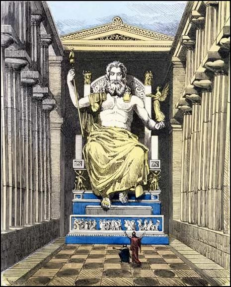
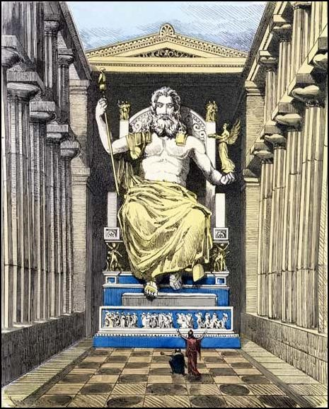

Ubicación: Olimpia, Grecia. Autor: Fidias. Fecha de construcción: 438-430 a.C. Altura: 12 m. Estado: destruida en un incendio en el siglo IV d.C. en Constantinopla.

La estatua de Zeus fue realizada hacia el siglo V a.C. por Fidias, y estaba destinada al templo conmemorativo de Zeus ubicado en Olimpia. Olimpia era, en realidad, una ciudad conmemorativa, creada para albergar los juegos olímpicos que, desde el siglo VII a.C. se hacían en honor al rey de los dioses.
Es probable que la escultura haya sido construida entre los años 438 y 430 a.C. De acuerdo con las descripciones antiguas, la estatua representaba a Zeus sentado en un trono. En una mano tenía un cetro y, en la otra, una imagen de la diosa Victoria (Niké)..

 
